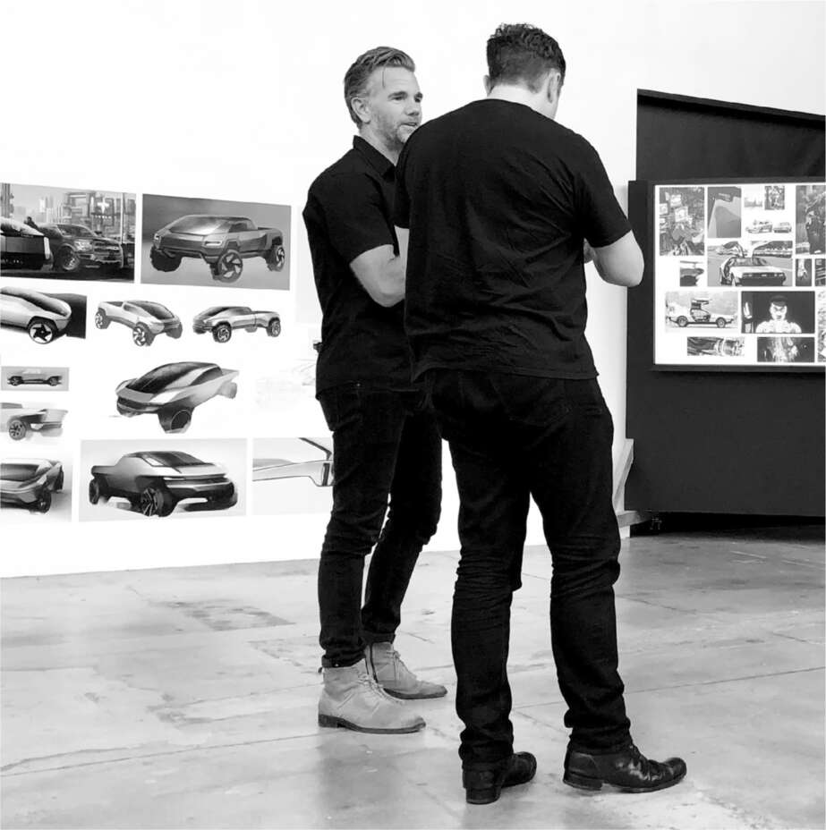

Thép
Hầu như chiều thứ Sáu nào kể từ khi thành lập xưởng thiết kế của Tesla vào năm 2008, Musk đều tổ chức buổi đánh giá sản phẩm với giám đốc thiết kế Franz von Holzhausen. Những buổi họp này, thường diễn ra trong phòng trưng bày yên tĩnh với sàn trắng ngay phía sau trụ sở SpaceX ở Los Angeles, là khoảng thời gian thư giãn, đặc biệt là sau những tuần làm việc căng thẳng. Musk và von Holzhausen sẽ thong thả đi quanh căn phòng rộng như nhà chứa máy bay, xem xét các nguyên mẫu và mô hình đất sét của những chiếc xe mà họ hình dung cho tương lai của Tesla.
Đầu năm 2017, họ bắt đầu bàn bạc về ý tưởng cho một chiếc xe bán tải Tesla.
Von Holzhausen bắt đầu với những thiết kế truyền thống, sử dụng Chevrolet Silverado làm mẫu. Một chiếc được đặt giữa xưởng, và họ nghiên cứu tỷ lệ và các bộ phận của nó. Musk muốn một thứ gì đó thú vị hơn, thậm chí gây bất ngờ. Vì vậy, họ xem xét các mẫu xe cổ điển có phong cách độc đáo, đáng chú ý nhất là El Camino, một chiếc coupé retro-futuristic do Chevrolet sản xuất vào những năm 1960. Von Holzhausen đã thiết kế một chiếc xe bán tải với phong cách tương tự, nhưng khi xem xét mô hình, họ đều đồng ý rằng nó trông quá mềm mại. "Nó quá cong", von Holzhausen nói. "Nó không có vẻ mạnh mẽ của một chiếc xe bán tải."
Sau đó, Musk bổ sung thêm một mẫu thiết kế khác truyền cảm hứng cho ông: Lotus Esprit cuối những năm 1970, một chiếc xe thể thao Anh Quốc có mũi nhọn hình nêm. Cụ thể, ông say mê phiên bản xuất hiện trong bộ phim James Bond năm 1977, Điệp viên 007: Yêu người chết. Musk đã mua chiếc xe được sử dụng trong phim với giá gần 1 triệu đô la và trưng bày nó trong xưởng thiết kế của Tesla.
Việc động não rất thú vị, nhưng vẫn chưa dẫn đến một ý tưởng nào khiến họ hào hứng. Để tìm cảm hứng, họ đã đến Bảo tàng Ô tô Petersen, nơi họ nhận thấy một điều bất ngờ. "Chúng tôi nhận ra", von Holzhausen nói, "rằng về cơ bản, xe bán tải đã không thay đổi về hình dáng hoặc quy trình sản xuất trong tám mươi năm qua."
Điều đó khiến Musk chuyển trọng tâm sang một điều cơ bản hơn: Họ nên sử dụng vật liệu gì để chế tạo thân xe? Bằng cách xem xét lại vật liệu và thậm chí cả cấu trúc vật lý của xe, điều đó có thể mở ra khả năng cho những thiết kế mới lạ.
Ban đầu, chúng tôi tính dùng nhôm," von Holzhausen nói. "Chúng tôi cũng đã cân nhắc titan, vì độ bền rất quan trọng." Nhưng vào khoảng thời gian đó, Musk bị mê hoặc bởi khả năng chế tạo tên lửa từ thép không gỉ sáng bóng. Ông nhận ra rằng điều này cũng có thể áp dụng cho một chiếc xe bán tải. Thân xe bằng thép không gỉ sẽ không cần sơn và có thể chịu một phần tải trọng của xe. Đó thực sự là một ý tưởng đột phá, một cách để định nghĩa lại một chiếc xe hơi. Một chiều thứ Sáu, sau vài tuần thảo luận, Musk bước vào và tuyên bố: "Chúng ta sẽ làm toàn bộ bằng thép không gỉ."
Charles Kuehmann là Phó Chủ tịch phụ trách kỹ thuật vật liệu tại cả Tesla và SpaceX. Một trong những lợi thế mà Musk có được là các công ty của ông có thể chia sẻ kiến thức kỹ thuật. Kuehmann đã phát triển một hợp kim thép không gỉ siêu cứng được "cán nguội" thay vì yêu cầu xử lý nhiệt, và Tesla đã được cấp bằng sáng chế cho hợp kim này. Nó đủ mạnh và đủ rẻ để sử dụng cho cả xe tải và tên lửa.
Việc quyết định sử dụng thép không gỉ cho Cybertruck có ý nghĩa quan trọng đối với kỹ thuật của chiếc xe. Thân xe bằng thép có thể đóng vai trò là kết cấu chịu lực của xe, thay vì để khung gầm đảm nhiệm vai trò đó. "Hãy tạo độ cứng cáp ở bên ngoài, biến nó thành một bộ xương ngoài, và treo mọi thứ khác từ bên trong," Musk đề xuất.
Việc sử dụng thép không gỉ cũng mở ra những khả năng mới cho diện mạo của chiếc xe tải. Thay vì sử dụng máy dập để tạo hình sợi carbon thành các tấm thân xe với các đường cong và hình dạng tinh tế, thép không gỉ sẽ ưu tiên các mặt phẳng thẳng và các góc cạnh sắc nét. Điều đó cho phép - và theo một cách nào đó là bắt buộc - nhóm thiết kế khám phá những ý tưởng mang tính tương lai, táo bạo và thậm chí là đột phá hơn.
Vào mùa thu năm 2018, Musk vừa mới thoát khỏi cơn ác mộng nhà máy Nevada và Fremont, những dòng tweet về ấu dâm và "chuyển sang tư nhân", cùng với sự hỗn loạn tinh thần của cái mà ông gọi là năm đau khổ nhất trong cuộc đời mình. Trong những thời điểm khó khăn, một trong những nơi ẩn náu của ông là tập trung vào một dự án tương lai. Đó là điều ông đã làm trong không gian yên bình của studio thiết kế vào ngày 5 tháng 10, khi ông biến chuyến thăm thứ Sáu thường lệ của mình thành một buổi động não về thiết kế của chiếc xe bán tải.
Chiếc Chevy Silverado vẫn còn trên sàn trưng bày để tham khảo. Trước mặt nó là ba bảng trưng bày lớn với hình ảnh của nhiều loại xe khác nhau, bao gồm cả những chiếc xe từ trò chơi điện tử và phim khoa học viễn tưởng. Chúng trải dài từ cổ điển đến hiện đại, bóng bẩy đến lởm chởm, uốn lượn đến sắc cạnh. Với hai tay đút túi một cách thoải mái, von Holzhausen có phong thái ung dung và thư thái của một người lướt sóng đang tìm kiếm con sóng phù hợp. Musk, tay chống nạnh, cuộn tròn như một con gấu đang tìm kiếm con mồi. Sau một lúc, Dave Morris và sau đó là một vài nhà thiết kế khác đi lang thang vào.
Khi nhìn vào những bức ảnh trên bảng trưng bày, Musk bị thu hút bởi những bức ảnh mang vẻ ngoài hiện đại, mang hơi hướng công nghệ. Họ gần đây đã thống nhất về thiết kế cho Model Y, một phiên bản crossover của Model 3, và Musk đã bị thuyết phục từ bỏ một số đề xuất cấp tiến và khác thường hơn của mình. Vì đã chọn giải pháp an toàn với Model Y, ông không muốn điều đó xảy ra với thiết kế của chiếc xe bán tải. "Hãy táo bạo," ông nói. "Hãy làm mọi người ngạc nhiên."
Mỗi khi ai đó chỉ vào một bức hình xe tải thông thường, Musk lại phản đối và chỉ vào chiếc xe trong trò chơi Halo, hoặc trong đoạn giới thiệu trò chơi Cyberpunk 2077 sắp ra mắt, hay từ phim Blade Runner của Ridley Scott. Con trai ông, Saxon, mắc chứng tự kỷ, gần đây đã đặt một câu hỏi khác thường khiến ông suy nghĩ: "Tại sao tương lai trông không giống tương lai?". Musk liên tục trích dẫn câu hỏi của Saxon. Như ông đã nói với đội ngũ thiết kế vào thứ Sáu hôm đó, "Tôi muốn tương lai trông giống như tương lai."
Một vài ý kiến bất đồng cho rằng một thứ gì đó quá hiện đại sẽ không bán được. Xét cho cùng, đây là một chiếc xe bán tải. "Tôi không quan tâm nếu không ai mua nó", ông nói vào cuối buổi họp. "Chúng ta sẽ không làm một chiếc xe tải nhàm chán truyền thống. Chúng ta luôn có thể làm điều đó sau. Tôi muốn tạo ra một thứ gì đó thật tuyệt vời. Kiểu như, đừng cản tôi."
Đến tháng 7 năm 2019, von Holzhausen và Morris đã chế tạo một mô hình kích thước thật của một thiết kế cyber sắc nét, hiện đại và gây ấn tượng mạnh với các góc cạnh và mặt cắt kim cương. Vào một thứ Sáu, họ đã gây bất ngờ cho Musk, người chưa từng thấy nó, bằng cách đặt nó giữa phòng trưng bày bên cạnh mẫu xe truyền thống hơn mà họ đang cân nhắc. Khi Musk bước vào từ cửa nhà máy SpaceX, phản ứng của ông ngay lập tức. "Chính nó!", ông thốt lên. "Tôi thích nó. Chúng ta sẽ làm cái này. Vâng, đây là những gì chúng ta sẽ làm! Được rồi, quyết định vậy."
Nó được biết đến với cái tên Cybertruck.
"Phần lớn mọi người trong studio này đều ghét nó", von Holzhausen nói. "Họ kiểu như, 'Ông không thể nghiêm túc được.' Họ không muốn dính dáng gì đến nó. Nó quá kỳ quặc." Một số kỹ sư bắt đầu bí mật nghiên cứu một phiên bản thay thế. Von Holzhausen, người nhẹ nhàng trái ngược với sự thẳng thừng của Musk, đã dành thời gian lắng nghe cẩn thận những lo ngại của họ. "Nếu bạn không nhận được sự đồng thuận từ những người xung quanh, thì rất khó để hoàn thành công việc", ông nói. Musk thì ít kiên nhẫn hơn. Khi một số nhà thiết kế thúc giục ông ít nhất nên thực hiện một số thử nghiệm thị trường, Musk trả lời: "Tôi không làm khảo sát nhóm."
Khi thiết kế của chiếc xe tải hoàn thành vào tháng 8 năm 2019, Musk nói với nhóm rằng ông muốn công bố một nguyên mẫu hoạt động vào tháng 11 năm đó - chỉ trong ba tháng thay vì chín tháng thông thường để tạo ra một nguyên mẫu chạy được. "Chúng ta sẽ không thể có một chiếc xe mà chúng ta thực sự có thể lái vào thời điểm đó", von Holzhausen nói. Musk trả lời: "Có, chúng ta sẽ làm được." Những thời hạn phi thực tế của ông thường không thành hiện thực, nhưng trong một số trường hợp thì có. "Nó buộc cả nhóm phải hợp tác, làm việc 24/7 và tập trung vào ngày đó", von Holzhausen nói.
Vào ngày 21 tháng 11 năm 2019, chiếc xe tải đã được lái lên sân khấu trong studio thiết kế để trình bày trước báo chí và khách mời. Có những tiếng thở hổn hển. "Nhiều người trong đám đông rõ ràng không thể tin rằng đây thực sự là chiếc xe mà họ đến xem", CNN đưa tin. "Cybertruck trông giống như một hình thang kim loại lớn trên bánh xe, giống một tác phẩm nghệ thuật hơn là một chiếc xe tải." Cũng có một bất ngờ không mong muốn khi von Holzhausen cố gắng thể hiện độ cứng của chiếc xe. Anh ta đập vào thân xe bằng búa tạ, nhưng không hề để lại vết lõm. Sau đó, anh ta ném một quả bóng kim loại vào một trong những cửa sổ "kính bọc thép" để chứng minh nó sẽ không vỡ. Trước sự ngạc nhiên của anh, nó đã nứt. "Chúa ơi!", Musk nói. "Chà, có lẽ hơi mạnh tay quá."
Nhìn chung, buổi thuyết trình không thành công lắm. Cổ phiếu Tesla đã giảm 6% vào ngày hôm sau. Nhưng Musk hài lòng. "Xe tải đã giống nhau trong một thời gian rất dài, khoảng một trăm năm", ông nói với đám đông. "Chúng tôi muốn thử một cái gì đó khác biệt."
Sau đó, ông lái chiếc xe nguyên mẫu chở Grimes đến nhà hàng Nobu, nơi những người giữ xe chỉ biết nhìn chằm chằm mà không dám chạm vào. Trên đường ra, bị paparazzi bám đuổi, ông đã lái xe chèn qua cọc tiêu có biển "Cấm rẽ trái" và rẽ trái.

Franz von Holzhausen thảo luận về thiết kế Cybertruck, 2018